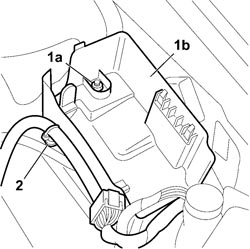

5505A28 CONTAINER FOR ADDITIONAL JUNCTION UNIT IN ENGINE COMPARTMENT - R.R.
- Path
- Procedures > 55 ELECTRICAL EQUIPMENT > 5505 INSTRUMENT/GAUGE ELECTRICAL CIRCUITS > 5505A MULTI-FUNCTION COMPONENTS > 5505A28 CONTAINER FOR ADDITIONAL JUNCTION UNIT IN ENGINE COMPARTMENT - R.R.
- Kind
- repair procedure (removal / refitting; the operation number is the code)
- Applies to
- all engines; all production periods
- Interactive page
- https://sloeber94.github.io/elrnDB-fCrm/en/#/194000670
Applies to: all engines; all production periods
 Removing
Removing
 Refitting
RefittingOp. 5505A13 ADDITIONAL JUNCTION UNIT IN ENGINE COMPARTMENT - R.R.
1. Undo the nut fixing (1a) the junction unit casing (1b).
2. Cut the two wiring retaining bands and remove the casing from the vehicle.

Applies to: all engines; all production periods
Refitting
Removing- Check that the additional junction unit container is not damaged.
- Place the container in position.
- Tighten the container fixing nut.
- Secure the wiring to the container using the two bands.
Op. 5505A13 ADDITIONAL JUNCTION UNIT IN ENGINE COMPARTMENT - R.R.